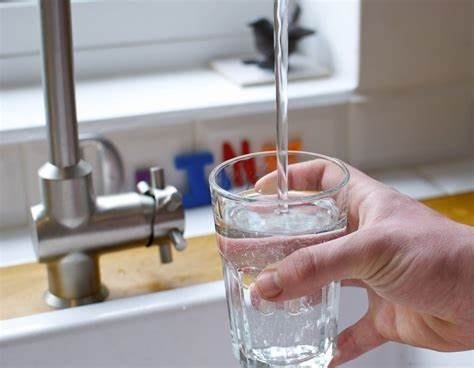

Supreme Court sides with San Francisco in water pollution case
The Supreme Court recently sided with San Francisco in a
water pollution case, ruling that the city's existing sewer system meets federal
permit guidelines. While this decision protects SF from stricter
regulations from the EPA, it doesn't change the reality: during
storms, millions of gallons of polluted wastewater
can still flow into the Bay. Experts argue the city is not
doing enough with its aging infrastructure.
New data suggests Redwood City is at risk of severe coastal
floods
Redwood City now faces the highest risk of costal flooding,
higher than San Francisco and Oakland, according to
recent assements by the city.
More than 22,000 people live at risk of flooding within the next
25 years. Despite the city's proximity to Silicon Valley, the
city lacks infrastructure needed to combat a future flood. How
will this affect the Bay area in the future? Or
is the future already here?

How to prepare for a major flood in San Francisco
As the
rain season approaches, San Francisco officials are urging residents to advantage of
free flood preparation gear, provided by the city. Free
sandbags, flood barriers, and subsidies for flood insurance are
avaialble through the SF Public Utilies Commission website. With
climate change intensifying predictable weather patterns, the
goal is to prevent damage to our infrastructure.

Is San Francisco tap water safe to drink?
San Francisco's tap water consistently ranks among the cleanest
in the nation. According to
recent water quality reports, all tested samples passed federal safety limits. However, it
is important to recognize that compliance with regulatory
standards doesn't equate to water free of contaminants. Here are
ways you can help to prevent water pollution.
...The Way Forward?
As climate change worsens, San Francisco faces
increased risk of flooding, stronger storms, and aging
infrastructure
that can no longer keep up.
SaveWaterSF was created to educate SF residents on how to
stay safe during the climate crisis, and how our water waste
contributes to the big picture.